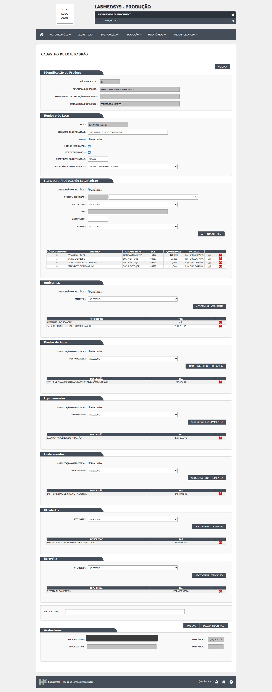
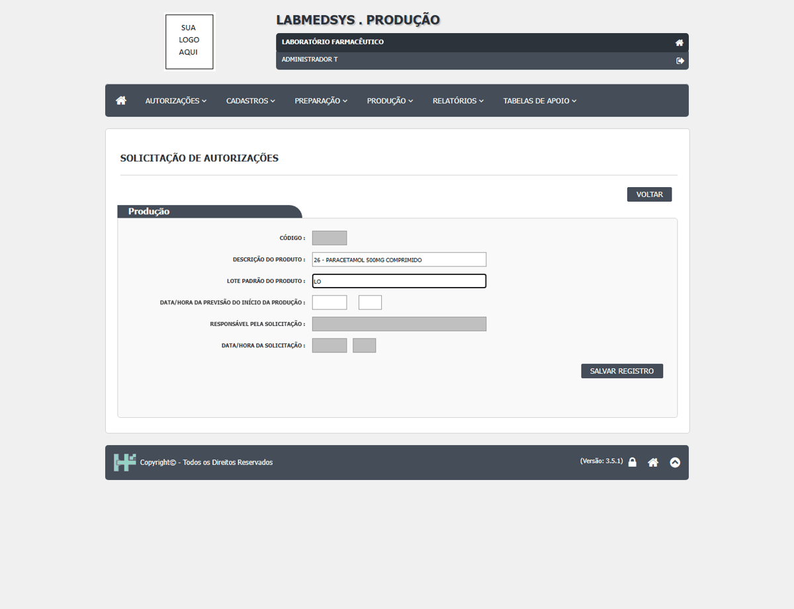
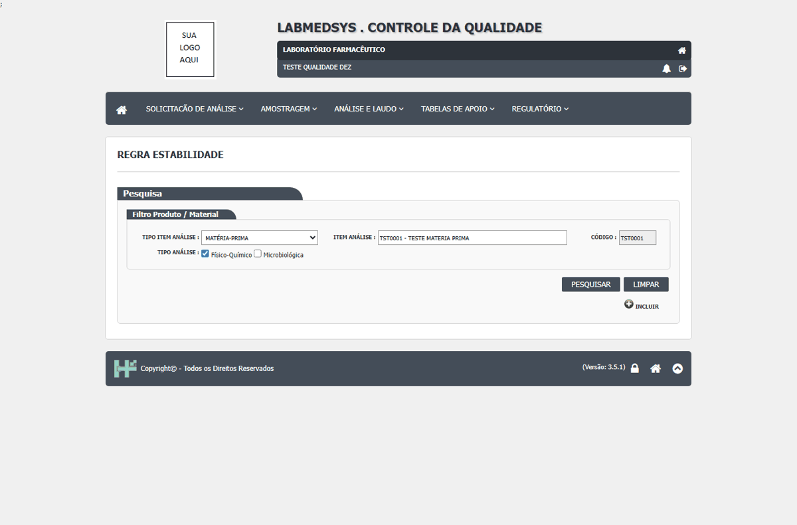
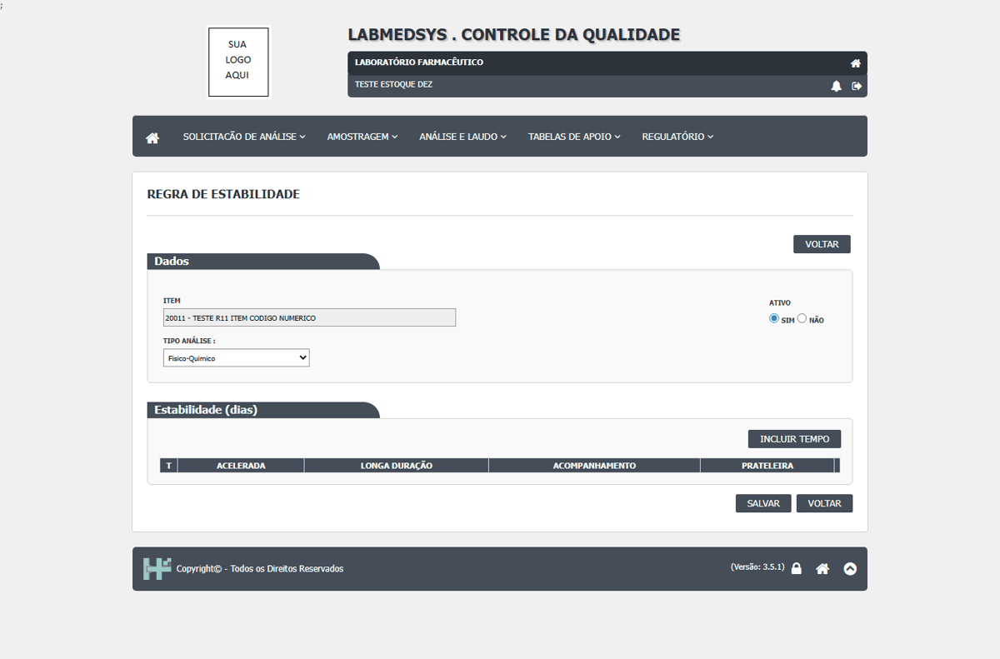
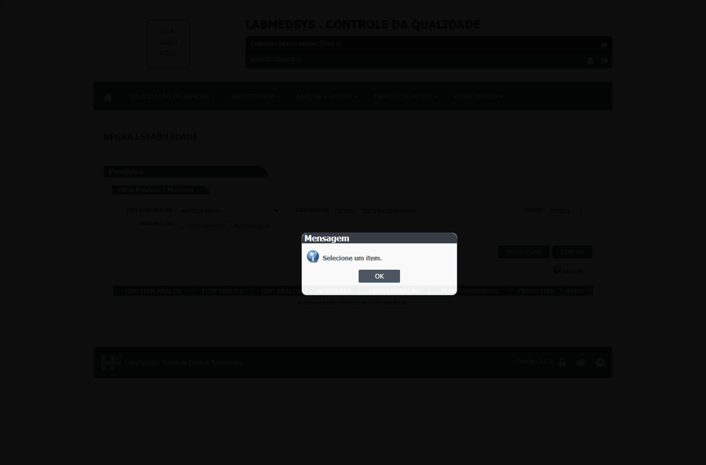
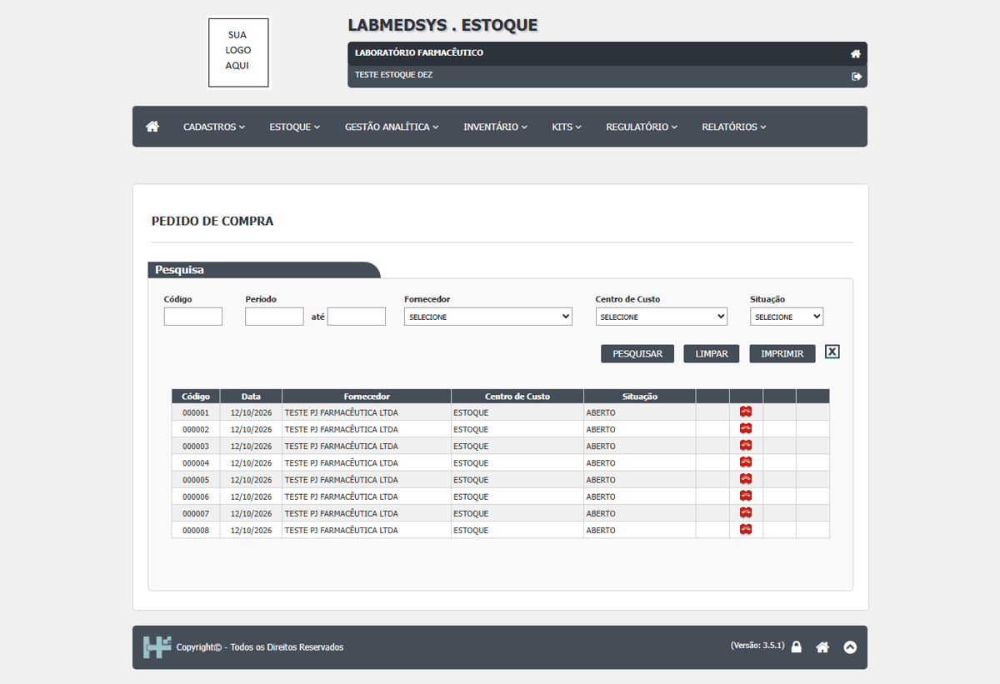
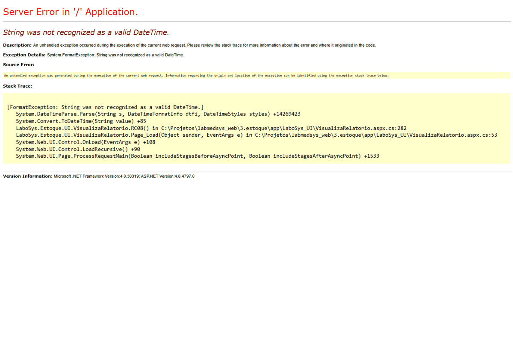

| Defeito | Gravidade | Situação | Título | Tela citada no defeito |
|---|---|---|---|---|
| DV-EST-027 | Alta | Aberto | Reprovar o laudo do CQ não exige motivo nem registra quem reprovou | CQ › Emissão Laudo Final (reprovar) |
| DV-EST-028 | Alta | Aberto | Qualquer usuário com a tela aprova o laudo do CQ, mesmo sem a função de chefe de subdivisão | CQ › Emissão Laudo Final (aprovar) |
| DV-EST-035 | Alta | Aberto | O CQ procura as funções por número fixo (34, 39, 41 e 48), que dependem da ordem de criação no cadastro | Principal × CQ › Cadastro de Funções e Emissão Laudo Final |
| DV-EST-036 | Alta | Aberto | Salvar a conta de um usuário no Principal apaga permissões que ele já tinha no Estoque e no CQ | Principal › Administração › Conta do Usuário (efeito sobre o Estoque e o CQ) |
| DV-EST-076 | Alta | Aberto | Ninguém consegue aprovar um Lote Padrão: a permissão que o código exige (configuração 19) não pode ser dada por nenhuma tela, e sem lote padrão aprovado a Produção não pede nem o primeiro lote | Produção › Cadastro de Lote Padrão e Solicitação de Autorizações (reflexo no Estoque: Solicitação de Material tipo Produção) |
| DV-EST-005 | Média | Aberto | Quem não tem permissão para o Estoque recebe só "Seu perfil não possuí permissão!", sem dizer qual função falta; um perfil novo com as 355 funções do Estoque também não abre o módulo | Estoque › Entrada no módulo (menu do Principal) |
| DV-EST-007 | Média | Aberto | Telas de Usuário e Perfil do Estoque abertas pelo endereço dão erro de servidor ou sessão expirada, em vez de uma recusa clara | Estoque › Administração › Usuário e Perfil (acesso direto pelo endereço) |
| DV-EST-030 | Média | Aberto | O "Responsável" do laudo mostra quem vê a tela, e não quem aprovou | CQ › Laudo |
| DV-EST-032 | Média | Aberto | A amostra do CQ sai do estoque sem registro na Central de Pesagem | Estoque › Separação da amostra |
| DV-EST-038 | Média | Aberto | O resultado de conformidade vem pré-selecionado em CONFORME | CQ › Consultar Análise Programada |
| DV-EST-075 | Média | Aberto | CQ › Regra de Estabilidade: a lista de itens devolve o código no lugar do identificador, e a tela responde "Selecione um item." para qualquer item cujo código tenha letras | CQ › Regulatório › Regra Estabilidade (Incluir) |
| DV-EST-077 | Média | Aberto | O Pedido de Compra não existe no cadastro de funções do perfil: ninguém recebe permissão de alterar, incluir ou baixar, e a lista só mostra Excluir | Estoque › Gestão (Pedido de Compra) e Principal › Perfil |
| DV-EST-140 | Média | Aberto | Relatórios RC07, RC08, RM03 e RM14: com a data incompleta, a janela mostra a página de erro do servidor com o rastro de chamadas | Estoque › Relatórios › RC07, RC08, RM03 e RM14 |
| DV-EST-037 | Baixa | Aberto | Mensagens do CQ que não dizem o que falta | CQ › Programação de Análise e Regra de Amostragem |
Cada defeito, com o passo a passo e as capturas
DV-EST-027 · Reprovar o laudo do CQ não exige motivo nem registra quem reprovou
A decisão que bloqueia um lote fica sem justificativa e sem registro de quem reprovou. O próprio Estoque pede "Motivo da Reprovação" em outros pontos.
Como reproduzir o erro, passo a passo
- No CQ, abrir Emissão Laudo Final de uma análise em "Liberar laudo".
- Escolher Reprovar sem escrever o motivo.
- Confirmar.
Esperado
Exigir o motivo e registrar quem reprovou, com assinatura.
Obtido
"Alteração efetuada com sucesso", sem motivo e sem registro de quem reprovou.
Sem captura de tela registrada para este defeito.
DV-EST-028 · Qualquer usuário com a tela aprova o laudo do CQ, mesmo sem a função de chefe de subdivisão
No **Controle da Qualidade**, a **aprovação do laudo é, na prática, a liberação do lote** para uso. O sistema foi pensado para que só o **chefe de subdivisão** (função 48 do cadastro) emita, reprove ou aprove laudos. No teste, um usuário **sem essa função** abriu a Emissão Laudo Final e **aprovou o laudo 005/26** ("Alteração efetuada com sucesso"). O código esconde só os botões **Emitir** e **Reprovar** de quem não tem a função; o botão **Aprovar** continua aparecendo e funciona. Depois de receber a função, o mesmo usuário passou a ver os três botões. **Risco:** qualquer pessoa com acesso à tela libera um lote, e o lote passa a aparecer para separação e movimentação no Estoque. É a decisão mais crítica do sistema, sem controle por função.
Como reproduzir o erro, passo a passo
- Ter um laudo pronto para liberação no CQ (no teste, laudo 005/26, depois que a análise foi digitada).
- Entrar com um usuário de teste do CQ sem a função de chefe de subdivisão, que não digitou os resultados, e abrir CQ › Emissão Laudo Final.
- Conferir que os botões Emitir e Reprovar não aparecem, mas Aprovar aparece; clicar em Aprovar.
- Atualizar o resultado no Estoque e conferir que o lote foi liberado.
Esperado
Só quem tem a função de chefe de subdivisão aprova o laudo; os demais não veem o botão e, se forçarem a chamada, o servidor recusa (assinatura eletrônica da liberação).
Obtido
O usuário sem a função aprovou o laudo ("Alteração efetuada com sucesso").
Sem captura de tela registrada para este defeito.
DV-EST-035 · O CQ procura as funções por número fixo (34, 39, 41 e 48), que dependem da ordem de criação no cadastro
O Controle da Qualidade usa **números fixos de função** para saber quem pode fazer o quê: 34 (amostrador), 39 (analista físico-químico), 41 (analista microbiológico) e 48 (chefe de subdivisão). No ambiente de teste, a função 39 se chamava **"AUDITOR"** e as funções **41 e 48 não existiam**. Sem a 48, **ninguém emite laudo nem reprova pela tela**; sem a 41, não se programa análise microbiológica. A função é cadastrada com número automático, então o número certo depende da **ordem de criação**: para chegar ao 48 foi preciso criar oito funções. **Risco:** uma função renomeada, recriada ou implantada fora de ordem dá a alguém o poder de aprovar, ou tira o de todos; em implantação, o ciclo do lote para sem aviso.
Como reproduzir o erro, passo a passo
- No Principal, abrir Administração › Funções (ou o cadastro de funções do módulo) e conferir quais números e nomes existem.
- Abrir no CQ a Emissão Laudo Final com um usuário que deveria poder emitir: os botões Emitir e Reprovar não aparecem para ninguém.
- Criar funções até o número 48 e dar a função 48 ao usuário: os botões aparecem.
Esperado
As funções do CQ são identificadas por um código estável e conferidas na implantação; quem tem a função de chefe pode emitir, aprovar e reprovar, e os demais não.
Obtido
Funções 41 e 48 inexistentes e 39 com outro nome; sem a 48, nenhuma pessoa emite laudo ou reprova.
Sem captura de tela registrada para este defeito.
DV-EST-036 · Salvar a conta de um usuário no Principal apaga permissões que ele já tinha no Estoque e no CQ
Ao acrescentar um perfil à conta de um usuário de teste, o menu do Estoque dele **encolheu**; ao tirar o perfil acrescentado, o menu voltou, mas o usuário **perdeu as ações que tinha** no Estoque (editar em Separação, Atendimento, Controle da Qualidade e Pesagem) e **o acesso ao CQ**. As permissões só voltaram depois que todas as funções do Estoque foram liberadas de novo no perfil e o perfil de qualidade foi dado outra vez ao usuário. **Risco:** uma alteração rotineira no cadastro de usuários retira acessos de forma silenciosa e sem aviso, e sem histórico de quem perdeu o quê. Na implantação, pessoas podem ficar sem acesso ao que precisam, ou ganhar acessos errados.
Como reproduzir o erro, passo a passo
- No Principal, abrir Administração › Conta do Usuário e abrir a conta de um usuário de teste que já usa o Estoque e o CQ (anote as telas e ações que ele tem).
- Acrescentar um segundo perfil à conta e salvar; entrar como esse usuário e ver o menu do Estoque encolher.
- Tirar o perfil acrescentado e salvar de novo.
- Entrar como o usuário e conferir que o menu voltou, mas as ações de editar nas telas de Separação, Atendimento, CQ e Pesagem não estão mais disponíveis.
Esperado
Incluir e retirar um perfil só afeta as permissões desse perfil; as demais permanecem como estavam. Toda mudança de permissão aparece no histórico.
Obtido
O usuário perdeu ações e o acesso ao CQ depois de acrescentar e retirar um perfil.
Sem captura de tela registrada para este defeito.
DV-EST-076 · Ninguém consegue aprovar um Lote Padrão: a permissão que o código exige (configuração 19) não pode ser dada por nenhuma tela, e sem lote padrão aprovado a Produção não pede nem o primeiro lote
Na **Solicitação de Autorizações**, o campo **Lote Padrão** do produto 26 volta **vazio**: a lista (chamada `CarregarLotePadrao`) só devolve lote padrão **ativo e aprovado**, e o lote padrão "LOTE PADRÃO 250.000 COMPRIMIDOS" está **sem aprovação** ("Aprovado por" em branco; elaborado por outra pessoa). O botão **Aprovar** do Cadastro de Lote Padrão só aparece para quem tem a **função profissional ligada à configuração 19** ("revisor de garantia da qualidade") e não é quem elaborou. Pelas telas isso é **impossível**: dei ao usuário de teste a função profissional 19 e depois **todas as 46 funções profissionais** cadastradas, e o botão não apareceu. O vínculo entre função profissional e configuração **não tem tela de cadastro** em nenhum módulo (nem na Função Profissional do Principal) e, neste banco, nenhuma função está ligada à 19. Efeito em cascata: sem lote padrão aprovado não há solicitação de autorizações, nem a solicitação de material "Produção" do Estoque, nem devolução da produção, nem entrada de produção de serviços; as listas de Autorizar/Cancelar Produção, Gerar Número de Lote, a Solicitação Avulsa e as sete autorizações estão vazias.
Como reproduzir o erro, passo a passo
- Produção › Cadastros › Cadastro de Lote Padrão, produto 26, abrir o lote padrão: "Aprovado por" vazio e nenhum botão Aprovar (nem para o administrador, nem para um usuário com todas as funções profissionais).
- Produção › Solicitação de Autorizações › Incluir: escolher o produto 26 e digitar no campo Lote Padrão: nenhuma sugestão.
Esperado
Quem tem a permissão de revisor de GQ aprova o lote padrão e a produção pode ser solicitada.
Obtido
Ninguém tem a permissão; o lote padrão nunca é oferecido.
Evidência (captura da tela)


DV-EST-005 · Quem não tem permissão para o Estoque recebe só "Seu perfil não possuí permissão!", sem dizer qual função falta; um perfil novo com as 355 funções do Estoque também não abre o módulo
Ao clicar em **Estoque** no menu do Principal, um usuário sem a permissão necessária cai numa tela de "Sessão Expirada" com a mensagem **"Seu perfil não possuí permissão!"**. A mensagem não diz **qual função** falta, nem se o problema é o perfil, o grupo ou o módulo. Em 07/10/2026 isso impediu o primeiro usuário de teste de entrar, mesmo com um perfil novo criado no Principal. Depois se viu que o menu do Estoque só aceita funções **do módulo Estoque** (as funções de outros módulos são ignoradas). Em 22/10/2026 o problema voltou: um **perfil novo com as 355 funções do Estoque** (e uma do Principal) **não abriu o Estoque**; só o perfil administrador abre. **Risco:** não dá para montar, com segurança, um usuário com acesso a só uma parte do Estoque (por exemplo, quem confere mas não autoriza), então a segregação de funções não pode ser testada nem configurada na implantação; e o usuário e o suporte ficam sem pista do que corrigir.
Como reproduzir o erro, passo a passo
- No Principal, abrir Administração › Perfil e criar um perfil com as funções do módulo Estoque (no teste de 22/10/2026, as 355 funções do Estoque e uma do Principal).
- Em Administração › Conta do Usuário, dar esse perfil a um usuário de teste (sem ser administrador).
- Entrar com o usuário no Principal e clicar em Estoque na lista de módulos.
- Observar a tela "Sessão Expirada" com "Seu perfil não possuí permissão!"; comparar com o usuário administrador, que entra normalmente.
Esperado
O usuário com um perfil que contém as funções do Estoque entra no módulo e vê só as telas que as funções permitem. Quando o acesso é negado, a mensagem diz qual função, grupo ou vínculo falta, para o administrador poder corrigir.
Obtido
"Seu perfil não possuí permissão!" sem indicar a causa; perfil novo com as 355 funções do Estoque também negado; só o perfil administrador abre o módulo.
Sem captura de tela registrada para este defeito.
DV-EST-007 · Telas de Usuário e Perfil do Estoque abertas pelo endereço dão erro de servidor ou sessão expirada, em vez de uma recusa clara
Depois de autenticar no Estoque, ao digitar o endereço da tela de **Usuário**, o servidor respondeu com erro (**"Object reference not set to an instance of an object"**, uma falha interna do programa); a de **Perfil**, com a tela de "Sessão Expirada". Em nenhuma delas o sistema disse, de forma clara, que o acesso não é permitido, e a abertura funcional das telas não pôde ser confirmada. **Risco:** a tela falha por um erro interno em vez de ser tratada com segurança; o erro mostra detalhes do programa a quem não deveria vê-los; e fica sem resposta se o usuário sem permissão consegue usar a tela quando a sessão está completa. O mesmo padrão voltou na rodada 6 (DV-EST-008).
Como reproduzir o erro, passo a passo
- Entrar no Estoque com um usuário de teste e, sem passar pelo menu da tela, digitar o endereço de Administração › Usuário (administracao/usuario_lst.aspx).
- Observar a resposta; repetir com a tela de Perfil (administracao/perfil_lst.aspx).
- Comparar com a abertura das mesmas telas pelo menu, quando existirem.
Esperado
As telas do Estoque que o usuário não pode usar respondem com "acesso negado" clara; as que pode usar abrem normalmente. Nenhuma mostra erro interno.
Obtido
Usuário: erro interno do servidor (HTTP 500). Perfil: "Sessão Expirada".
Sem captura de tela registrada para este defeito.
DV-EST-030 · O "Responsável" do laudo mostra quem vê a tela, e não quem aprovou
O campo "Responsável" do laudo mostra o usuário que está com a tela aberta. Quem aprovou só aparece no Estoque ("Aprovado por"), depois da atualização. O "número do laudo" no Estoque é o número da solicitação (005/26).
Como reproduzir o erro, passo a passo
- Aprovar e emitir o laudo do TESTEPA001 com um usuário.
- Abrir o laudo com outro usuário e ver o campo Responsável.
- No Estoque, atualizar o resultado e ver "Aprovado por".
Esperado
O laudo mostra quem aprovou e quando, com número próprio.
Obtido
Mostra quem vê a tela; número do laudo igual ao da solicitação.
Sem captura de tela registrada para este defeito.
DV-EST-032 · A amostra do CQ sai do estoque sem registro na Central de Pesagem
A amostra sai do estoque (100 para 90) sem passar pela Central de Pesagem. A solicitação nasce já "atendida", e basta confirmar a separação. O "Volume" do lote continua com a quantidade antiga (100).
Como reproduzir o erro, passo a passo
- No CQ, programar a amostragem do TESTEPA001.
- No Estoque, confirmar a separação da amostra.
- Abrir a Central de Pesagem e a Disponibilidade do Lote.
Esperado
Pesagem registrada (tag da balança, lacre, peso) e volume atualizado.
Obtido
Sem registro de pesagem; saldo 90 e volume 100.
Sem captura de tela registrada para este defeito.
DV-EST-038 · O resultado de conformidade vem pré-selecionado em CONFORME
Na digitação dos resultados da análise, o campo de conformidade já vem em "CONFORME". Quem salva sem mexer registra "conforme" sem ter avaliado.
Como reproduzir o erro, passo a passo
- No CQ, abrir Consultar Análise Programada e escolher a análise.
- Digitar o teor e deixar a conformidade como veio.
- Salvar.
Esperado
Nenhuma opção pré-selecionada: o analista escolhe.
Obtido
"CONFORME" já marcado.
Sem captura de tela registrada para este defeito.
DV-EST-075 · CQ › Regra de Estabilidade: a lista de itens devolve o código no lugar do identificador, e a tela responde "Selecione um item." para qualquer item cujo código tenha letras
Em **Regra Estabilidade**, escolher o tipo de item e o item na lista de sugestões e clicar em **Incluir** devolve **"Selecione um item."** para os itens `TST0001` e `TST0003` (código com letras). A sugestão preenche o campo escondido do identificador com o **código** do item (`TST0001`), e a validação espera um número. Para um item de código numérico (`10001` e `20011`) a mesma tela funciona e abre a página de inclusão da regra. **Não é erro de uso:** foi repetido escolhendo pela lista com o mouse e com a seta e Enter, e com dois usuários diferentes (um de perfil administrador e um de perfil só do CQ); a chamada ao servidor mostra `idItem=TST0001` e a resposta `{"sucesso":false,"mensagem":"Selecione um item."}`. A Regra de Amostragem aceitou o item `20011` (numérico); não testei lá um código com letras.
Como reproduzir o erro, passo a passo
- CQ › Regulatório › Regra Estabilidade, tipo de item "MATÉRIA-PRIMA", digitar "TESTE MAT" e escolher TST0001 - TESTE MATERIA PRIMA.
- Marcar Físico-Químico e clicar em Incluir: "Selecione um item.".
- Repetir com o item 20011 (código numérico): abre a página de inclusão da regra.
Esperado
Aceitar qualquer item da lista.
Obtido
Só aceita item com código numérico.
Evidência (captura da tela)




DV-EST-077 · O Pedido de Compra não existe no cadastro de funções do perfil: ninguém recebe permissão de alterar, incluir ou baixar, e a lista só mostra Excluir
Os pedidos de compra 000001 a 000008 (todos ABERTO) aparecem na lista com **só o ícone Excluir**: não há ícone de editar nem de baixar e a lista não tem botão Incluir, tanto para o administrador quanto para o usuário de Estoque. O código mostra o motivo: o ícone de editar só aparece com a permissão **Alterar** da tela; o de baixar só aparece com o pedido FINALIZADO ou EM RECEBIMENTO e com a função **BAIXAR_PEDIDO**; o Incluir depende da permissão Incluir. Na árvore de funções do **perfil** (aba Estoque, 361 funções, 360 marcadas no perfil administrador) **não existe nenhum nó de Pedido de Compra** nem de baixa de pedido: só Análise de Estoque e Curva ABC na Gestão Analítica. Ou seja, nenhum perfil consegue receber essas permissões. O menu do Estoque também não tem o item, e os pedidos gerados pela Análise de Estoque ficam sempre ABERTO, sem como finalizar ou baixar.
Como reproduzir o erro, passo a passo
- Abrir a lista de Pedido de Compra (não há item de menu): pedidos só com Excluir.
- Abrir Principal › Perfil, aba Estoque, e procurar "Pedido" ou "Compra" na árvore de funções: nenhum nó.
Esperado
A tela tem item de menu e funções no perfil (Incluir, Alterar, Excluir, Baixar).
Obtido
Sem item de menu e sem funções; só Excluir.
Evidência (captura da tela)

DV-EST-140 · Relatórios RC07, RC08, RM03 e RM14: com a data incompleta, a janela mostra a página de erro do servidor com o rastro de chamadas
Os quatro relatórios montam o endereço da janela com o texto das datas. Quando a data chega incompleta (máscara em branco `__/__/____` no RC07 e no RC08, ou ano `0024` no RM03 e no RM14, que aparece quando a digitação por teclado entra truncada), a janela do relatório mostra a página amarela de erro do servidor, com "String was not recognized as a valid DateTime." ou "Erro ao gerar o relatório!" e o rastro de chamadas (nomes de classes e de arquivos de código). Pela tela, o campo obrigatório só confere se há texto, não se a data é válida. Ficou de fora desta rodada digitar datas inválidas completas (por exemplo 31/02/2026).
Como reproduzir o erro, passo a passo
- Abrir o RC08 (ou RC07), deixar a data com a máscara __/__/____ e clicar em GERAR RELATÓRIO.
- Ler a janela que abre.
Esperado
Mensagem na tela dizendo que a data é inválida, sem abrir a janela.
Obtido
Página de erro técnico do servidor, com o rastro de chamadas.
Evidência (captura da tela)

DV-EST-037 · Mensagens do CQ que não dizem o que falta
Programação de Análise com a data em branco mostra "Data início Análise anterior a data atual". Regra de Amostragem em branco mostra só "Ocorreu um erro inesperado.".
Como reproduzir o erro, passo a passo
- Em Programação de Análise, deixar a data em branco e confirmar.
- Em Regra de Amostragem, deixar a regra em branco e confirmar.
Esperado
Mensagem do campo que falta.
Obtido
Mensagem de data anterior; erro genérico.
Sem captura de tela registrada para este defeito.